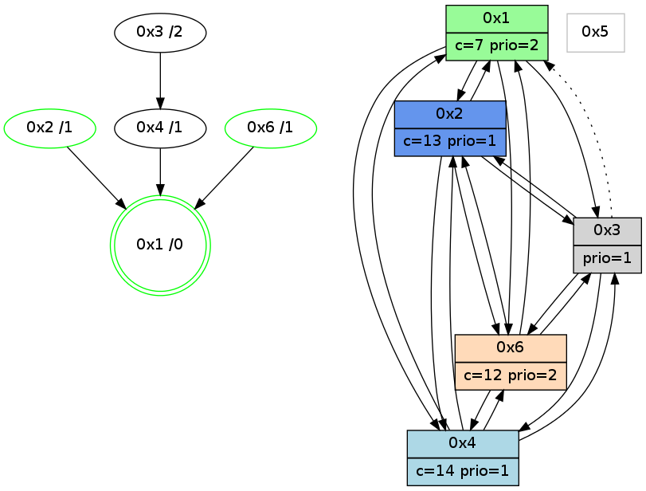

>> << IDX [start] -100 -25 -5 +0 +5 +25 +100 [980.001352072]
 Previous packets
----------------------------------------------------------------------
975.015950 beacon01(adaf) #0 coord=01,02,05,03,04,06 cycle=432.0ms assoc
-- color-indic=1 64 f0 8c
975.025911 beacon02(adaf) #0 coord=01,02,05,03,04,06 cycle=432.0ms assoc 64 a1 73
975.035911 beacon05(adaf) #0 coord=01,02,05,03,04,06 cycle=432.0ms assoc 64 07 59
975.045910 beacon03(adaf) #0 coord=01,02,05,03,04,06 cycle=432.0ms assoc 64 9b 7d
975.055911 beacon04(adaf) #0 coord=01,02,05,03,04,06 cycle=432.0ms assoc 64 3d 57
975.065913 beacon06(adaf) #0 coord=01,02,05,03,04,06 cycle=432.0ms assoc 64 49 4b
975.077621 [Hello(4): seq=781 sym=2,1,6,3 sysInfo=hasWarning stat=2:7,0,7,1/1:3,6,2,0/6:2,0,7,2/3:1,0,3,2]
975.080342 [Color(2) seq=168 @0:0 color=13 prio=1 c=7,c,e;1,4,6,8,9,b]
975.090009 [Color(1) seq=207 @0:0 color=7 prio=2 c=1,4,6,8,9,b,c,d;0,2,3,5,a,e]
----------------------------------------------------------------------
975.508058 beacon01(adaf) #0 coord=01,02,05,03,04,06 cycle=432.0ms assoc
-- color-indic=1 64 bc 3c
975.518018 beacon02(adaf) #0 coord=01,02,05,03,04,06 cycle=432.0ms assoc 64 ed c3
975.528019 beacon05(adaf) #0 coord=01,02,05,03,04,06 cycle=432.0ms assoc 64 4b e9
975.538019 beacon03(adaf) #0 coord=01,02,05,03,04,06 cycle=432.0ms assoc 64 d7 cd
975.548020 beacon04(adaf) #0 coord=01,02,05,03,04,06 cycle=432.0ms assoc 64 71 e7
975.558020 beacon06(adaf) #0 coord=01,02,05,03,04,06 cycle=432.0ms assoc 64 05 fb
975.569172 [Hello(1): seq=681 sym=2,4,6 sysInfo=hasWarning,coloring-mode-on,ColoringModeRequestCalled stat=2:0,1,2,3/4:2,1,2,0/6:14,3,7,1]
975.571711 [Hello(6): seq=694 sym=4,2,1,3 sysInfo=hasWarning stat=4:8,10,5,1/2:14,13,15,2/1:6,11,1,1/3:10,3,7,5]
975.574868 [Color(6) seq=166 @0:0 color=12 prio=2 c=7,d,e;1,4,6,8,9,b]
975.578823 [Hello(2): seq=1270 sym=3,6,1,4 sysInfo=hasWarning stat=3:6,11,6,3/6:2,0,7,0/1:13,8,11,0/4:3,3,2,0]
----------------------------------------------------------------------
976.000166 beacon01(adaf) #0 coord=01,02,05,03,04,06 cycle=432.0ms assoc
-- color-indic=1 64 78 53
976.010126 beacon02(adaf) #0 coord=01,02,05,03,04,06 cycle=432.0ms assoc 64 29 ac
976.020127 beacon05(adaf) #0 coord=01,02,05,03,04,06 cycle=432.0ms assoc 64 8f 86
976.030127 beacon03(adaf) #0 coord=01,02,05,03,04,06 cycle=432.0ms assoc 64 13 a2
976.040128 beacon04(adaf) #0 coord=01,02,05,03,04,06 cycle=432.0ms assoc 64 b5 88
976.050128 beacon06(adaf) #0 coord=01,02,05,03,04,06 cycle=432.0ms assoc 64 c1 94
976.061829 [Hello(4): seq=782 sym=2,1,6,3 sysInfo=hasWarning stat=2:8,1,7,1/1:4,7,2,0/6:3,1,7,2/3:1,0,3,2]
976.064587 [Color(2) seq=169 @0:0 color=13 prio=1 c=7,c,e;1,4,6,8,9,b]
976.067847 [STC(1) #0.137 new-neigh,tree-change,inconsistent-stability,stable,to-color d=0]
976.070437 [Color(1) seq=208 @0:0 color=7 prio=2 c=1,4,6,8,9,b,c,d;0,2,3,5,a,e]
----------------------------------------------------------------------
976.492275 beacon01(adaf) #0 coord=01,02,05,03,04,06 cycle=432.0ms assoc
-- color-indic=1 64 35 54
976.502236 beacon02(adaf) #0 coord=01,02,05,03,04,06 cycle=432.0ms assoc 64 64 ab
976.512236 beacon05(adaf) #0 coord=01,02,05,03,04,06 cycle=432.0ms assoc 64 c2 81
976.522236 beacon03(adaf) #0 coord=01,02,05,03,04,06 cycle=432.0ms assoc 64 5e a5
976.532237 beacon04(adaf) #0 coord=01,02,05,03,04,06 cycle=432.0ms assoc 64 f8 8f
976.542237 beacon06(adaf) #0 coord=01,02,05,03,04,06 cycle=432.0ms assoc 64 8c 93
976.553761 [STC(4)->1 #0.137 new-neigh,tree-change,inconsistent-stability,to-color d=1]
976.555014 [Hello(1): seq=682 sym=2,4,6 sysInfo=hasWarning,coloring-mode-on,ColoringModeRequestCalled stat=2:1,1,2,3/4:3,1,2,0/6:15,4,7,1]
976.557886 [Hello(2): seq=1271 sym=3,6,1,4 sysInfo=hasWarning stat=3:7,11,6,3/6:2,0,7,0/1:13,9,12,0/4:3,3,2,0]
976.561244 [Hello(6): seq=695 sym=4,2,1,3 sysInfo=hasWarning stat=4:8,10,5,1/2:15,14,15,2/1:7,12,2,1/3:11,3,7,5]
976.564378 [STC(6)->1 #0.137 new-neigh,tree-change,inconsistent-stability,stable,to-color d=1]
976.566668 [Color(6) seq=167 @0:0 color=12 prio=2 c=7,d,e;1,4,6,8,9,b]
976.571197 [STC(2)->1 #0.137 new-neigh,tree-change,inconsistent-stability,stable,to-color d=1]
----------------------------------------------------------------------
976.984385 beacon01(adaf) #0 coord=01,02,05,03,04,06 cycle=432.0ms assoc
-- color-indic=1 64 f1 3b
976.994346 beacon02(adaf) #0 coord=01,02,05,03,04,06 cycle=432.0ms assoc 64 a0 c4
977.004346 beacon05(adaf) #0 coord=01,02,05,03,04,06 cycle=432.0ms assoc 64 06 ee
977.014346 beacon03(adaf) #0 coord=01,02,05,03,04,06 cycle=432.0ms assoc 64 9a ca
977.024348 beacon04(adaf) #0 coord=01,02,05,03,04,06 cycle=432.0ms assoc 64 3c e0
977.034348 beacon06(adaf) #0 coord=01,02,05,03,04,06 cycle=432.0ms assoc 64 48 fc
977.046045 [Hello(4): seq=783 sym=2,1,6,3 sysInfo=hasWarning stat=2:9,2,8,1/1:5,8,3,0/6:4,2,8,2/3:1,0,3,2]
977.048588 [Color(1) seq=209 @0:0 color=7 prio=2 c=1,4,6,8,9,b,c,d;0,2,3,5,a,e]
977.049952 [Hello(3): seq=781 sym=6,4,2 asym=1 sysInfo=hasWarning stat=6:8,9,2,1/4:2,3,6,0/2:6,14,9,1/1:15,14,14,1]
977.052371 [Color(2) seq=170 @0:0 color=13 prio=1 c=7,c,e;1,4,6,8,9,b]
977.053804 [STC(3)->4-.->1 #0.137 new-neigh,tree-change,inconsistent-stability,to-color d=2]
----------------------------------------------------------------------
977.476494 beacon01(adaf) #0 coord=01,02,05,03,04,06 cycle=432.0ms assoc
-- color-indic=1 64 bd 8b
977.486456 beacon02(adaf) #0 coord=01,02,05,03,04,06 cycle=432.0ms assoc 64 ec 74
977.496455 beacon05(adaf) #0 coord=01,02,05,03,04,06 cycle=432.0ms assoc 64 4a 5e
977.506456 beacon03(adaf) #0 coord=01,02,05,03,04,06 cycle=432.0ms assoc 64 d6 7a
977.516456 beacon04(adaf) #0 coord=01,02,05,03,04,06 cycle=432.0ms assoc 64 70 50
977.526456 beacon06(adaf) #0 coord=01,02,05,03,04,06 cycle=432.0ms assoc 64 04 4c
977.537346 [Hello(1): seq=683 sym=2,4,6,3 sysInfo=hasWarning,coloring-mode-on,ColoringModeRequestCalled stat=2:2,2,3,3/4:3,1,2,0/6:0,5,8,1/3:0,0,1,0]
977.540010 [Hello(6): seq=696 sym=4,2,1,3 sysInfo=hasWarning stat=4:9,10,6,1/2:15,15,0,2/1:7,13,2,1/3:12,3,8,5]
977.541852 [Hello(2): seq=1272 sym=3,6,1,4 sysInfo=hasWarning stat=3:7,11,7,3/6:2,0,7,0/1:13,9,12,0/4:4,3,2,0]
977.544854 [Color(6) seq=168 @0:0 color=12 prio=2 c=7,d,e;1,4,6,8,9,b]
----------------------------------------------------------------------
977.968606 beacon01(adaf) #0 coord=01,02,05,03,04,06 cycle=432.0ms assoc
-- color-indic=1 64 79 e4
977.978567 beacon02(adaf) #0 coord=01,02,05,03,04,06 cycle=432.0ms assoc 64 28 1b
977.988567 beacon05(adaf) #0 coord=01,02,05,03,04,06 cycle=432.0ms assoc 64 8e 31
977.998566 beacon03(adaf) #0 coord=01,02,05,03,04,06 cycle=432.0ms assoc 64 12 15
978.008568 beacon04(adaf) #0 coord=01,02,05,03,04,06 cycle=432.0ms assoc 64 b4 3f
978.018568 beacon06(adaf) #0 coord=01,02,05,03,04,06 cycle=432.0ms assoc 64 c0 23
978.030258 [Hello(4): seq=784 sym=2,1,6,3 sysInfo=hasWarning stat=2:10,3,8,1/1:6,9,3,0/6:5,3,8,2/3:2,0,4,2]
978.032738 [Color(2) seq=171 @0:0 color=13 prio=1 c=7,c,e;1,4,6,8,9,b]
978.034853 [Color(1) seq=210 @0:0 color=7 prio=2 c=1,4,6,8,9,b,c,d;0,2,3,5,a,e]
978.037012 [Color(5) seq=117 @0:0 color=11/12 prio=1 c=8,d;4,7,9,c,e]
----------------------------------------------------------------------
978.460714 beacon01(adaf) #0 coord=01,02,05,03,04,06 cycle=432.0ms assoc
-- color-indic=1 64 5c d9
978.470674 beacon02(adaf) #0 coord=01,02,05,03,04,06 cycle=432.0ms assoc 64 0d 26
978.490675 beacon03(adaf) #0 coord=01,02,05,03,04,06 cycle=432.0ms assoc 64 37 28
978.500676 beacon04(adaf) #0 coord=01,02,05,03,04,06 cycle=432.0ms assoc 64 91 02
978.522431 [Hello(2): seq=1273 sym=3,6,1,4 sysInfo=hasWarning stat=3:7,11,7,3/6:2,1,7,0/1:13,10,12,0/4:4,3,2,0]
978.524524 [Hello(1): seq=684 sym=2,4,6,3 sysInfo=hasWarning,coloring-mode-on,ColoringModeRequestCalled stat=2:3,2,3,3/4:3,1,2,0/6:1,6,8,1/3:0,0,1,0]
978.527644 [STC(1) #0.138 new-neigh,tree-change,inconsistent-stability,stable,to-color d=0]
978.530495 [Hello(6): seq=697 sym=4,2,1,3 sysInfo=hasWarning stat=4:9,10,6,1/2:0,0,0,2/1:8,14,2,1/3:13,3,8,5]
978.533645 [Color(6) seq=169 @0:0 color=12 prio=2 c=7,d,e;1,4,6,8,9,b]
----------------------------------------------------------------------
978.952822 beacon01(adaf) #0 coord=01,02,05,03,04,06 cycle=432.0ms assoc
-- color-indic=1 64 98 b6
978.962783 beacon02(adaf) #0 coord=01,02,05,03,04,06 cycle=432.0ms assoc 64 c9 49
978.972783 beacon05(adaf) #0 coord=01,02,05,03,04,06 cycle=432.0ms assoc 64 6f 63
978.982783 beacon03(adaf) #0 coord=01,02,05,03,04,06 cycle=432.0ms assoc 64 f3 47
978.992785 beacon04(adaf) #0 coord=01,02,05,03,04,06 cycle=432.0ms assoc 64 55 6d
979.002784 beacon06(adaf) #0 coord=01,02,05,03,04,06 cycle=432.0ms assoc 64 21 71
979.014725 [Hello(4): seq=785 sym=2,1,6,3 mpr= sysInfo=hasWarning stat=2:11,4,8,1/1:7,10,4,0/6:6,4,8,2/3:2,0,4,2]
979.017377 [STC(2)->1 #0.138 new-neigh,tree-change,inconsistent-stability,stable,to-color d=1]
979.019592 [STC(4)->1 #0.138 new-neigh,tree-change,inconsistent-stability,to-color d=1]
979.021715 [Color(2) seq=172 @0:0 color=13 prio=1 c=7,c,e;1,4,6,8,9,b]
979.023512 [Color(1) seq=211 @0:0 color=7 prio=2 c=1,4,6,8,9,b,c,d;0,2,3,5,a,e]
----------------------------------------------------------------------
979.444930 beacon01(adaf) #0 coord=01,02,05,03,04,06 cycle=432.0ms assoc
-- color-indic=1 64 d4 06
979.454893 beacon02(adaf) #0 coord=01,02,05,03,04,06 cycle=432.0ms assoc 64 85 f9
979.464891 beacon05(adaf) #0 coord=01,02,05,03,04,06 cycle=432.0ms assoc 64 23 d3
979.474893 beacon03(adaf) #0 coord=01,02,05,03,04,06 cycle=432.0ms assoc 64 bf f7
979.484892 beacon04(adaf) #0 coord=01,02,05,03,04,06 cycle=432.0ms assoc 64 19 dd
979.494892 beacon06(adaf) #0 coord=01,02,05,03,04,06 cycle=432.0ms assoc 64 6d c1
979.506641 [Hello(2): seq=1274 sym=3,6,1,4 sysInfo=hasWarning stat=3:8,11,7,3/6:3,2,7,0/1:14,11,13,0/4:4,3,2,0]
979.509309 [Hello(6): seq=698 sym=4,2,1,3 sysInfo=hasWarning stat=4:9,10,6,1/2:1,1,1,2/1:8,15,2,1/3:14,3,9,5]
979.512466 [Color(6) seq=170 @0:0 color=12 prio=2 c=7,d,e;1,4,6,8,9,b]
979.514677 [Hello(1): seq=685 sym=2,4,6,3 sysInfo=hasWarning,coloring-mode-on,ColoringModeRequestCalled stat=2:3,2,3,3/4:3,1,2,0/6:2,7,8,1/3:0,0,1,0]
----------------------------------------------------------------------
979.937038 beacon01(adaf) #0 coord=01,02,05,03,04,06 cycle=432.0ms assoc
-- color-indic=1 64 10 69
979.946999 beacon02(adaf) #0 coord=01,02,05,03,04,06 cycle=432.0ms assoc 64 41 96
979.956999 beacon05(adaf) #0 coord=01,02,05,03,04,06 cycle=432.0ms assoc 64 e7 bc
979.966998 beacon03(adaf) #0 coord=01,02,05,03,04,06 cycle=432.0ms assoc 64 7b 98
979.977000 beacon04(adaf) #0 coord=01,02,05,03,04,06 cycle=432.0ms assoc 64 dd b2
979.987000 beacon06(adaf) #0 coord=01,02,05,03,04,06 cycle=432.0ms assoc 64 a9 ae
979.998707 [Hello(4): seq=786 sym=2,1,6,3 sysInfo=hasWarning stat=2:12,5,8,1/1:8,11,4,0/6:7,5,8,2/3:2,0,4,2]